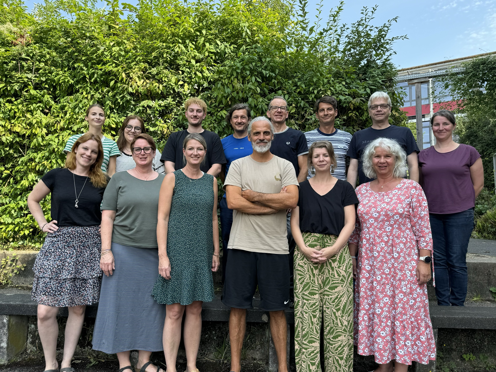

Deutsch am NCG
„Die Sprache ist der Schlüssel zur Welt.“ – Alexander von Humboldt
Das Fach Deutsch entwickelt die sprachlichen Fähigkeiten der Schülerinnen und Schüler in Verstehen, Ausdruck und Kommunikation weiter.
Es bildet die Grundlage für alle weiteren Fächer und bereitet auf Oberstufe, Ausbildung und Studium vor.
Was Deutsch am NCG besonders macht
Der Deutschunterricht fördert kommunikative Kompetenz, kulturelle Bildung und die Fähigkeit, Texte zu analysieren und kreativ zu gestalten.
Schülerinnen und Schüler lernen sachlich, kreativ und differenziert zu schreiben und zu sprechen.
Neben Analyse und Interpretation spielen auch Theater, Filme, Gedichte und kreative Schreibformen eine Rolle.
Förderung & Projekte
In der Erprobungsstufe werden Sprachkompetenzen regelmäßig diagnostiziert und gefördert. Leseförderung spielt eine zentrale Rolle (z. B. Antolin, Lesewettbewerbe).
Es gibt Vorlesewettbewerbe, Projekttage und kreative Schreibformate wie Poetry Slams.
Oberstufe
In der Oberstufe vertiefen wir Literatur, Sprache und Kommunikation in Grund- und Leistungskursen. Exkursionen (z. B. Weimar) ergänzen den Unterricht.
Unsere Deutsch-Fachschaft

- Antje Wolf
- Timm Wiegmann
- Felicitas Schult
- Michael Stracke
- Verena Soworka
- Raphaela Schiffmann
- Sascha Moritz
- Michael Meyners
- Dörte Mehrens
- Lena Kuhlenbäumer
- Elisabeth Enders
- Silke Caspary
- Tobias Bänsch